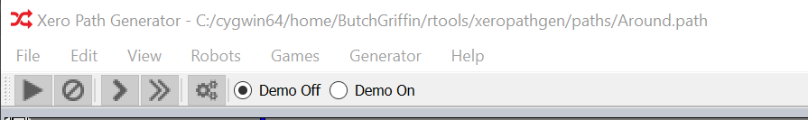

Demo Mode

The demo mode is used to demonstrate a path in action. To enable the demo
mode, select either a path or a path group and select the Demo On button
in the demo toolbar.
The play button resumes a paused demo.
The stop button can be used to pause the demostration.
The single arrow button moves the demonstration forward one time step.
The double arrow button moves the demostration forward ten time steps.
The gear button displays a robot configuration window that demostrates the
velocities of the robot wheels. This window only updates when the demostration
is stopped.